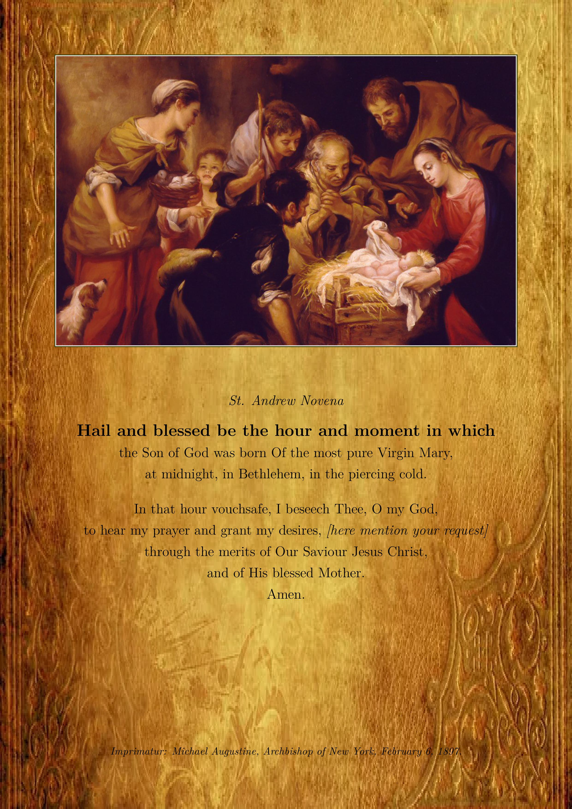

← Blog - December 2024
← Blog - December 2024
St. Andrew Novena
Published on:
Introduction
This year, my wife and I have continued the tradition of praying the St. Andrew Novena. It is a beautiful novena which begins on the Feast of St. Andrew (November 30th) and ends on Christmas Eve. It is prayed fifteen times per day. The novena is also known as the Christmas Anticipation Prayer and the St. Andrew Christmas Miracle Novena. When we began praying it this year, we prayed the prayer 15 times immediately following our daily rosary. We found it prudent—to make our meditations more fruitful—to break it up into three segments of five when possible. The prayer is a good length for committing to memory within the first couple of days. I created a PDF with the words of the prayer and an image, which is available below. The image is taken from catholictradition.org. I will also include the Latin text.
{kind=link}
St. Andrew Novena
And the Word was made flesh and dwelt amongst us.
St. Andrew Novena
Hail and blessed be the hour and moment in which the Son of God was born Of the most pure Virgin Mary, at midnight, in Bethlehem, in the piercing cold. In that hour vouchsafe, I beseech Thee, O my God, to hear my prayer and grant my desires, [here mention your request] through the merits of Our Saviour Jesus Christ, and of His blessed Mother. Amen.
God hath visited His people.
St. Andrew, pray for us.
Latin Text
Et Verbum caro factum est et habitávit in nobis.
Christmas Novena Oratio Sancti Andreae
Qua hora momentumque grandine benedictus Dei Filius natus ex Maria Virgine purissimum media in Bethleem penetrabile frigus. In illa hora, dignare, domine deus meus? exaudi orationem meam, ad orationem servi tui et dona, per merita Salvatoris nostri Jesu Christi et eius sanctissimae Matris promovit. Amen.
Deus visitávit plebem suam.
Sancte Andrea, ora pro nobis.